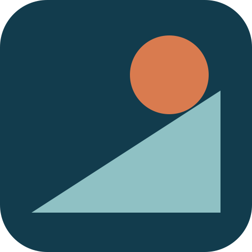

Brand kit · v1.0 · Carte Nationale
Every Swiss source. Rolled up for you.
The Swiss public-data rollup for AI agents. Cartographic precision, gridded Swiss typography, and a myth for a mascot: 66 public sources, one server, every answer cited.
npx -y swissyphus01 · Mark & lockups
The boulder on the slope. The circle never touches the incline: the work is never done. The slope sits at the steepness where avalanches start.
02 · Favicon scale

On dark tiles the slope shifts to Glacier so the boulder stays the only warm pixel on screen.
03 · Colour
#123C4D
ink · surfaces · 40%
#1F7A8C
lines · links · 20%
#8FC1C4
fills · 10%
#EEF3F2
paper · 25%
#D97B4F
accent only · 5%
04 · Typography
DISPLAY: ARCHIVO EXPANDED 800 · UPPERCASE
Aa Gg Rr 0147
BODY: ARCHIVO 400/600
151 tools, zero API keys. Every answer cited.
DATA & CODE: IBM PLEX MONO
2’600’000 / 1’200’000 (LV95)
05 · Grid discipline
Everything sits on a visible 1px rule grid in Lake Deep. Columns divide the page like map sheets; no soft shadows, no rounded cards: the border is the design. Radius is reserved for pills and the favicon tile.
Baseline 8px · gutters 44px · rules #123C4D 1px
06 · UI language
✓ 14 modules loaded · SLF, MeteoSwiss, FOEN…
→ get_avalanche_danger_at 46.8, 9.8
level 3: considerable · © SLF
07 · Voice
Declarative, exact, wry. Coordinates over adjectives; the myth carries the humour so the docs don’t have to.
“Every Swiss source. Rolled up for you.”
“One must imagine the API happy.”
“Every answer cited, down to the exact upstream request.”
“No signup. No keys. Under 60 seconds to first result.”
08 · Files


09 · Usage
Lower-case wordmark, always “swissyphus” in the lockup and “Swissyphus” in running text. Never pair the mark with the Swiss cross or federal insignia: Swissyphus is independent and not endorsed by the Confederation.